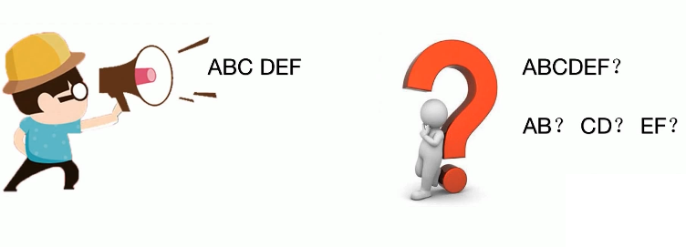

TCP的粘包
1. 粘包与半包
之前的文章中一直提到，TCP 是面向流的协议，也就是说协议的内容像流水一样，没有明确的分割标志。
TCP 默认使用了 Nagle 算法，为了提高传输性能，会将多个包累积一起发送。
例如 A 和 B 使用了 TCP 进行通信，A 向 B 发送了两个数据包，分别为 100 字节和 200 字节。B 可能先收到 100 字节，再收到 200 字节，这很美好；也可能先收到 50 字节，再收到 250 字节；也可能先收到 50 字节，再收到 100 字节，最后收到 150 字节……
发送方 A 是知道两个数据包的边界是 100 字节，然而对于接收方 B 而言，是不知道把收到的数据中多少字节作为一个包来处理的。
当发送方发送多个包以上的数据时，接收方一次读取的数据可能是大于等于 1 个（1 个，1.5 个，3 个…皆有可能）包的数据，这被称为粘包。相应的，如果一次发送数据很多，由于 TCP 收到底层 MTU 的限制，会将其分为多个 TCP 包发送，而接收方读取的数据可能只是发送方一个包的部分，这被称为半包。

其实，粘包不是 TCP 协议造成的，它的出现是由于设计了不合适的应用层协议。当被问到这个问题时，往往是想考验设计协议的能力。
粘包和半包是应用层实现者的过错，不是 TCP 协议的问题，这里分享一个知乎用户的段子。
看到“TCP粘包”这个专有名词，我表示极度震惊。连夜打车回到家里，战战兢兢翻开《计算机网络》，拿着放大镜仔细看了半夜，也没看到“粘包”两个字。我的后背不觉地渗出致密的汗水，双手止不住地发抖。匆忙打开电脑，一篇篇地翻着论文，试图寻找关于这个词的信息。可眼看天就要亮了，我依旧一无所获。
我失望的躺在床上，满脑子都是“粘包，粘包，粘包！”，横竖睡不着，不得已打开了知乎，写下了一个问题“究竟什么是TCP粘包”。不一会儿答案就如雪花儿般涌了出来，每一片雪花上都写着一句话“TCP没有粘包”。我颤抖的双手终于停了下来，一股热流从我心底涌到泪腺。啊，原来我并不孤独。
2. 解决方案
解决 TCP 粘包的核心在于设计一个有消息边界的应用层协议，主要有以下方式。
2.1 固定长度
一个直观的思路每个包采用固定长度，接收方每次收满一个包长度的数据，再拿出来解析。
这种思路格式简单，但如果包内容不足固定长度，需要进行填充，造成空间浪费。另一方面灵活性差，包内容超过固定长度， 需要进行分包分片，增加额外的处理逻辑。一般不推荐使用。
在 netty 中可以用 FixedLengthFrameDecoder 实现固定长度的解析。
2.2 分割符
另一种思路是设置一个分割符标记包的末尾，例如 FTP 协议中通过 “\r\n” 表示一个包的结束。
分割符方案实现比较简单，也没有空间浪费，但有一个小缺点，当包的内容存在分割符时，需要进行转义和额外的解析工作。
在 netty 中可以用 DelimiterBasedFrameDecoder 实现基于分割符的解析。
2.3 固定长度首部+数据体
类似 TCP、IP 等协议的设计，为数据添加固定长度的首部，在首部中指明数据长度和其他参数，在数据体部分添加实际传输的数据。
1 | class Header { |
接收方先读取固定长度的首部，再根据首部中的参数读取特定长度的数据。一般比较复杂的中间件和 RPC 框架都会采用这种方式。
在 netty 中可以用 LengthFieldBasedFrameDecoder 实现基于分割符的解析。